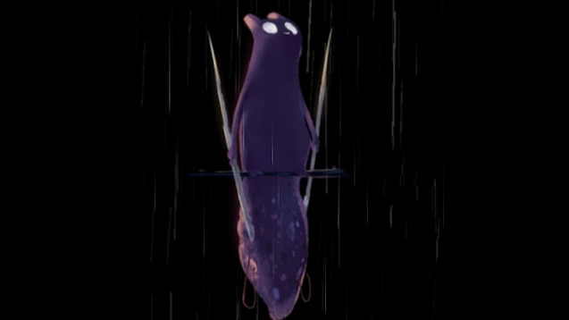

Umbreon
Umbreon es un pokemon de segunda generación (Johto), es de tipo Siniestro. Un Eevee evoluciona a Umbreon durante la noche y al tener 220 de amistad con él. Al ser tipo Siniestro es débil ante pokemones de tipo Bicho, Hada y Lucha, pero es superresistente contra pokemones de tipo Fantasma y Siniestro
Fuente de imagen
Yharon, Dragon of Rebirth
Yharon, Dragon of Rebirth (Dragon del Renacimiento, en español) es un jefe del Calamity Mod en Terraria. Los jugadores deben enfrentarse a él luego de derrotar al Devorador de Dioses, usando su invocador "Huevo de dragón de la selva" en la selva. Derrotarlo soltará Fragmentos de Alma de Yharon, material necesario para fabricar lingotes áuricos.
Yharon, en la historia, es el último Dragón que quedó en pie tras el final de la Era de los Dragones. Al ser un fénix, su dominio de poder yace en el renacimiento. Fue sacrificado con el resto de su especie, pero regresó como huevo destinado a consumir su alma áurica cuando eclosionara, y gobernar para siempre como un dios-rey.
 Fuente de imagen
Fuente de imagen
Spearmaster
El Spearmaster es un slugcat de Rain World (DLC Downpour). Tiene la habilidad de crear lanzas con su cola, sostener 2 de éstas al mismo tiempo y alimentarse al drenar la vida de los enemigos que mate con sus lanzas. Este slugcat fue creado por el iterador SRS (Seven Red Suns) y en el juego el Spearmaster es enviado por SRS para mandarle un mensaje a Five Pebbles, por ésta razón este slugcat se lo describe como el mensajero.

Artwork oficial de Rain World
Ori
El protagonista de los juegos de Ori and the Blind Forest y Will of the Wisps. Es un espíritu cuya misión principal es proteger el bosque de Nibel en el primer juego, y Niwen en el segundo juego. A lo largo de los juegos, Ori va adquiriendo habilidades mediante árboles ancestrales.
Artwork oficial de Ori and the Will of the Wisps
Railgunner
La railgunner es un personaje de Risk of Rain 2 (DLC Survivors of the Void). Está desbloqueado por defecto al obtener la expansión. Posee habilidades que pueden resultar relativamente débiles para enemigos normales o élites, pero son potencialmente devastadoras para jefes, permitiendo matarlos de 1 solo disparo si se usa una build adecuada.

Imagen desde el selector de personajes
The Forgotten
Es uno de los personajes jugables en The Binding of Isaac: Rebirth, su desbloqueo es complejo ya que consta de varios pasos:
- Matar a The Lamb
- Iniciar una partida y matar al jefe del primer piso en menos de 1 minuto
- Ir a la sala de spawn, poner una bomba y agarrar el primer fragmento de la pala que caerá del techo
- A partir de ahora caerán pisotones de mamá. Tendremos que llegar a la boss rush y completarla
- Al completar la boss rush recibiremos el segundo fragmento de la pala, completando el item y cesando los pisotones
- Ir a la Dark Room, buscar una sala vacía con terreno con diferente textura y usar la pala
- Tras usar la pala se desbloqueará The Forgotten
Este personaje tiene un ataque melee que hace mucho daño, y también puede separar su alma del cuerpo pero estará encadenada al esqueleto, limitando su movilidad. Además de que usa corazones de huevo, y el alma usa corazones de alma.
The Forgotten en la transición entre pisos